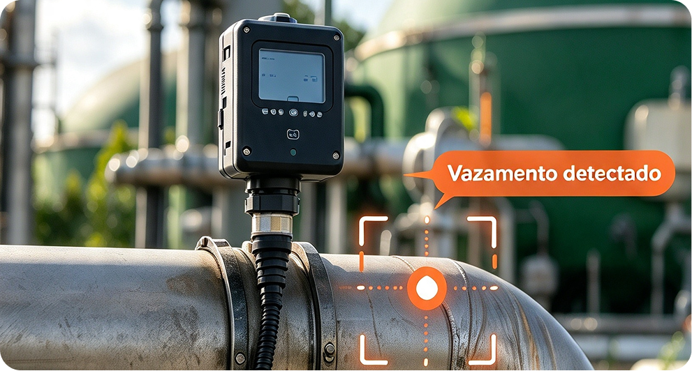
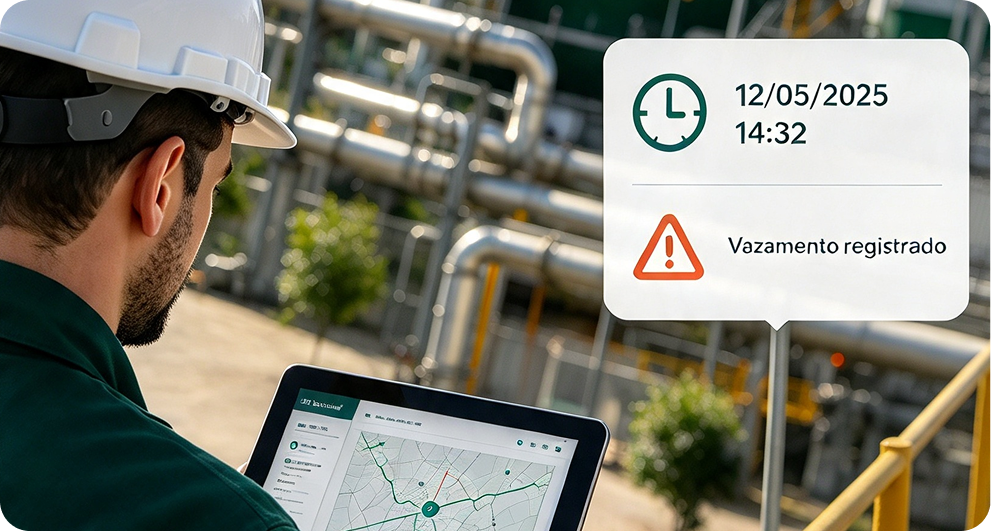
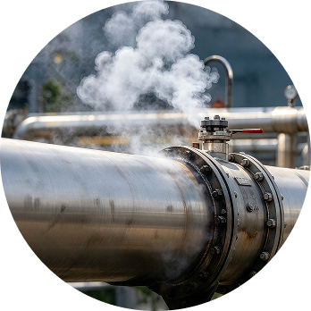
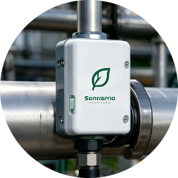
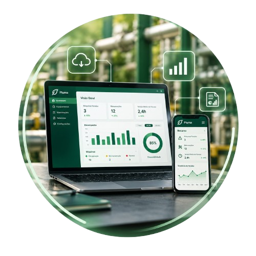
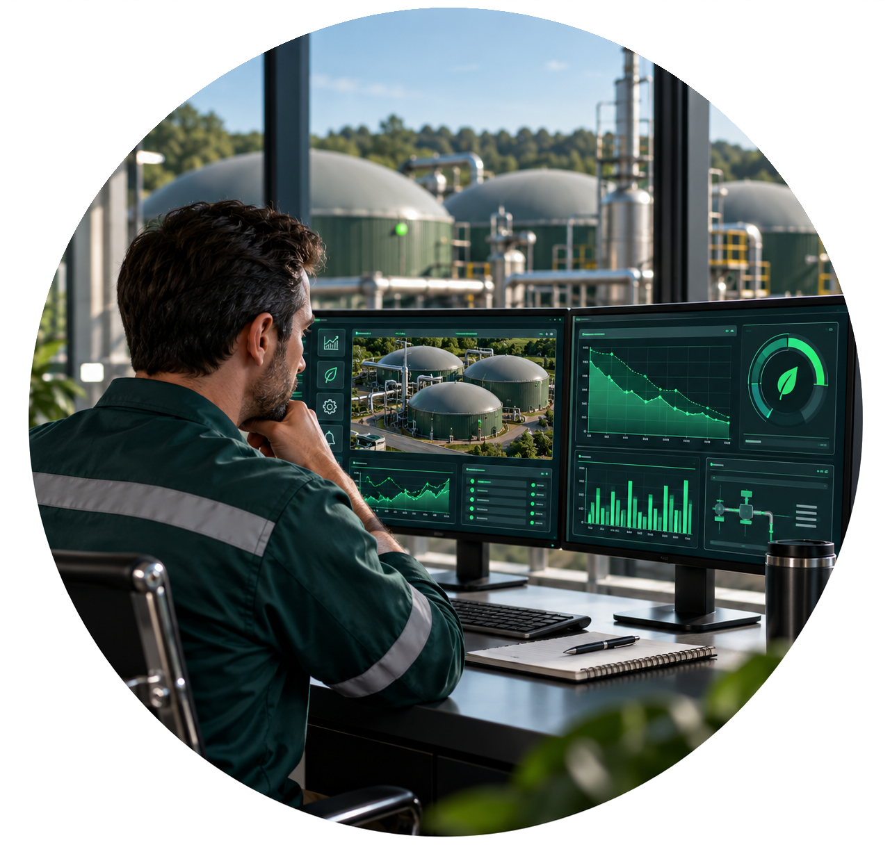
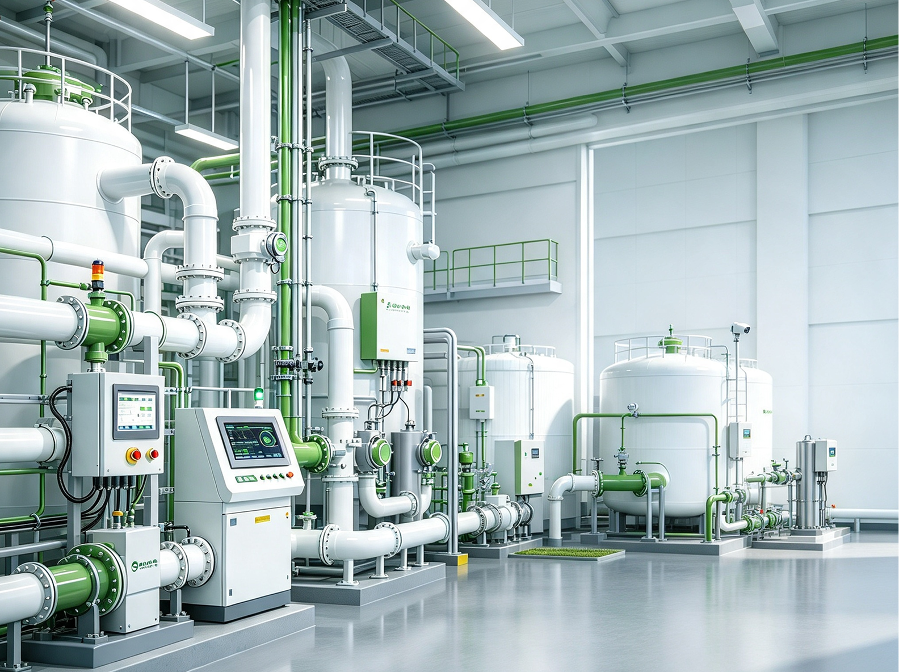
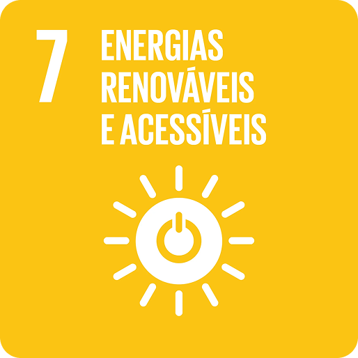
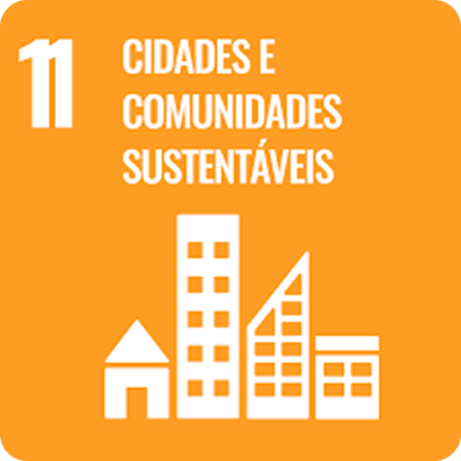

Do vazamento à informação:
tudo em um só lugar
01

Onde vazou
Localização da Ocorrência
02

Quando vazou
Registro preciso de ocorrência
03
Quanto foi perdido
Dados para reduzir desperdícios

VAZAMENTO
Uma perda ocorre

MONITORAMENTO
A Pluma identifica a ocorrência

DADOS
Os dados revelam o impacto

REDUÇÃO DE PERDAS
A informação que apoia a redução
Simule e veja quanto
você economiza de verdade.
Valor de venda do M³(R$)
Você economiza com a Pluma
R$ 0,00
Economia anual potencial
Perda Mensal:
R$ 0,00
Perda da produção:
5%

QUEM SOMOS
A PLUMA é uma empresa especializada em soluções de monitoramento de vazamentos de gás para indústrias produtoras de biometano. Nosso sistema une sensores analógicos de gás, instalados nos pontos da planta, a uma dashboard web, onde o gestor acompanha as leituras em tempo real.
Os dados coletados são registrados e formam um histórico da usina, o que permite identificar situações anormais de acordo com as regras definidas pela própria empresa. Com informação clara e atualizada, a PLUMA contribui para a segurança da operação e para a redução das perdas.
+04
+09
+127
Sustentabilidade que
vai além do meio ambiente

Eficiência no uso
de recursos energéticos
O monitoramento de vazamentos auxilia na identificação de perdas de biometano, otimizando o aproveitamento do recurso energético.
Tecnologia
aplicada à eficiência
A Pluma utiliza sensores, monitoramento e análise de dados para desenvolver uma solução tecnológica para o acompanhamento das operações.

Eficiência e
sustentabilidade
A utilização eficiente de recursos e a redução de desperdícios contribuem para uma maior sustentabilidade na cadeia de produção e utilização do biometano.
Monitoramento para
reduzir desperdícios
A identificação de vazamentos busca reduzir perdas de biometano e riscos de explosão, contribuindo para práticas operacionais mais responsáveis.